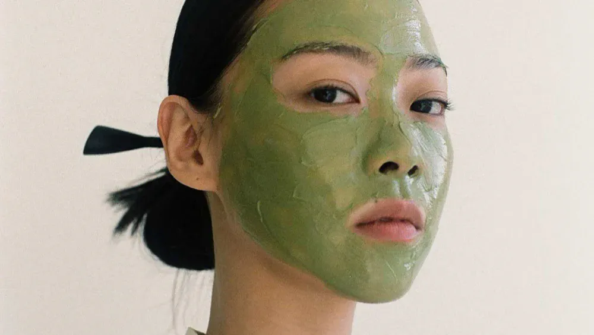
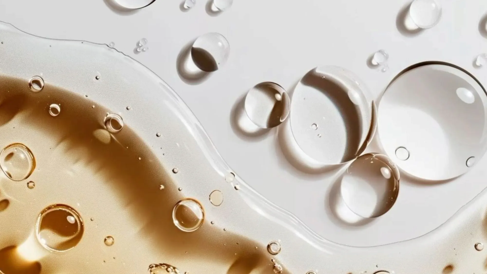

L’essence Rosalya.

Chez Rosalya, nous croyons qu’une beauté sincère réside dans l’équilibre et la simplicité.
Née de l’ambition de créer des soins essentiels et hautement efficaces, Rosalya se distingue par sa philosophie minimaliste. Nous nous concentrons sur des formules épurées, enrichies de concentrations optimales d’actifs ciblés (comme la Niacinamide, les Peptides ou la Vitamine C) et d’extraits botaniques de première qualité (Eau de rose bio, Centella asiatica).
Chaque produit est une promesse de douceur et de résultats visibles, conçu pour respecter l’équilibre naturel de votre peau. Nous éliminons le superflu pour ne garder que l’essentiel : une routine élégante, douce et performante.
L’alliance d’une rigueur scientifique et d’une sensorialité douce.
Nous cherchons l’équilibre entre des actifs puissants, un design épuré, et le respect absolu de votre peau.
0 %
Minimalisme
0 %
Actifs ciblés
0 %
Douceur
0 %
Botanique

Créés sans cruauté.
Rosalya est une marque engagée et cruelty-free. Aucun test sur les animaux, ni sur nos ingrédients, ni sur nos produits finis, et nos fournisseurs respectent les mêmes standards éthiques.
Questions fréquentes
Chez Rosalya, nous souhaitons que votre expérience soit entièrement satisfaisante. Vous disposez de 14 jours après réception pour retourner tout produit non ouvert et dans son emballage d’origine pour un échange ou un remboursement.
Pour des raisons d’hygiène et de sécurité, nous ne pouvons accepter le retour d’articles déjà ouverts ou utilisés. Veuillez contacter notre service client pour initier la procédure de retour.
Nous traitons les commandes très rapidement pour garantir une livraison rapide. Si vous souhaitez modifier ou annuler votre commande, veuillez nous contacter par e-mail dans les plus brefs délais après l’achat. Si la commande n’a pas encore été préparée ou expédiée, nous ferons de notre mieux pour procéder à la modification. Passé ce délai, cela ne sera malheureusement plus possible.
Oui. La livraison standard est offerte pour toutes les commandes dépassant un montant minimum de 60 €. Pour les commandes inférieures à ce seuil, les frais de livraison seront calculés au moment du paiement en fonction de votre adresse de livraison.
Absolument pas. Rosalya est une marque engagée et cruelty-free. Nous n’effectuons aucun test sur les animaux, que ce soit pour nos ingrédients ou pour nos produits finis, et nous nous assurons que nos fournisseurs respectent les mêmes standards éthiques.
L’ordre d’application est essentiel pour l’efficacité. La règle d’or est : du plus fin au plus riche. Commencez par le Nettoyant, puis la Lotion, suivie des Sérums (du plus liquide au plus épais), et terminez par la Crème ou l’Huile pour sceller les actifs. Vous trouverez également un mode d’emploi détaillé sur chaque fiche produit.